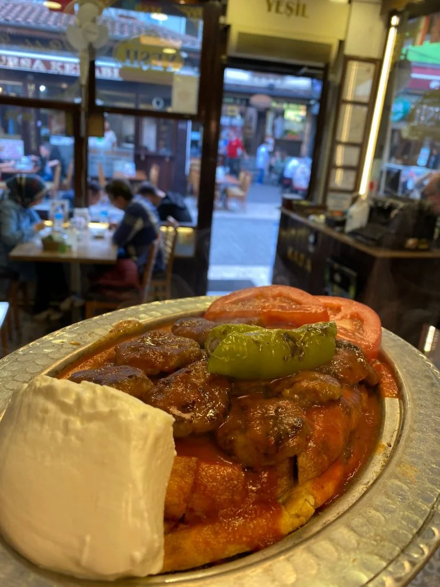

Pideli Köfte
Yeşil Pideli Köfte
Yeşil Pideli Köfte (Mahir Usta), Tarihi Kayhan Çarşısı'nda 1970 yılından beri hizmet veriyor. Pideli köfte, Bursa'nın İskender kebapla birlikte en sevilen yemeklerinden biri. Pidenin üzerine köfte konur, yanında domates, biber ve yoğurt servis edilir, en son üzerine kızgın tereyağı dökülür. Yemekten önce gelen turşu ve ikramlar da lezzetin habercisidir. Sofrayı sütlü helvayla bitirmek de Bursa'da bir gelenektir.
Kısaca
- Konum: Kayhan Çarşısı, Osmangazi
- Kuruluş: 1970
- Kurucu: Hüsamettin Sünneli
- Öne çıkan lezzet: Pideli köfte
- Yanında: Domates, biber ve yoğurt
- Tatlı önerisi: Sütlü helva
Diğer Restoranlar

Kebapçı İskender
Kebap

Acı Dayı
Cantık

Hacıbey Kebap
Kebap

Uludağ Kebapçısı
Kebap